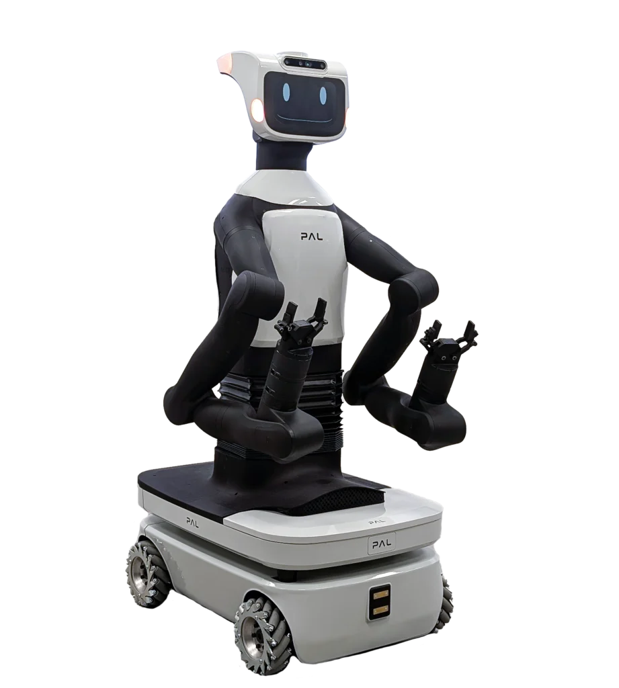

Tiago Pro — manipulation
Pick-and-place behaviour combining perception and LLM-grounded planning.
Object classification and 6D pose estimation for cluttered-scene manipulation on Tiago and Tiago Pro, with GPT-3.5 Turbo and LLaMA integrated as foundation-model interfaces for natural-language grasping behaviour.
Pick-and-place behaviour combining perception and LLM-grounded planning.
